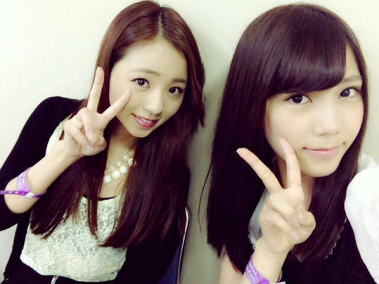

は〜い\(*・ω・*)/
こんにちは。
今日も 楽しちー Rotty☆デース。
ぢゃぢゃんっ ))))

ろってぃ- & 川後
そうっ！ そうなんです。
昨日は ガールズアワードへ
行ってきました〜＼(^o^)／
今回は 観客として応援団としてね！
乃木坂のメンバーが
liveそして、ランウェイを
歩かせて頂けるということでっ
私は もう張り切って張り切って
皆さんに紛れて 観客席で
応援していました(*ノ▽ノ)
自分達のパフォーマンスを
客観的に見ることができました。
ちょうど一週間後に
この代々木体育館で
乃木坂46の単独ライブをする。
んー 何だか不思議な感じでした！
皆さんからの目線を
確認することができました(*´ω｀*)
絶対 いいライブにしたい！！
本番間近！頑張るねん。
倖田來未さんの生ライブも
迫力があり 本当にかっこよかったです☆
楽屋は、9nine 乃木坂46 E-girls と
並んでいて、
懐かしい この集まり(´；ω；｀)
9nineのひろな、E-girlsのるり
何だか不思議なんです。
昔通ってたボイトレが一緒の時があって
ひろなとは小学生の頃
同じライブハウスに出たり
るりは中学にあがってからも
同じダンススクールで
ライブとかも何回かやってて
高校あがったら
わりと皆ばらばらなってんけど
こうやって 大阪から上京してきて
ここでこうやって再会してることが
嬉しかった( ＾∀＾)
大きい有名なスクールに
通ってた訳じゃないから
余計に なんか嬉しい！
後、E-girlsの友達☆
久しぶりに さあちゃんにも会えた〜！
嬉しいー。
さあちゃん可愛い 大好きやねん\(´▽`)/
ん。
明日は 名古屋で個別握手会だね〜＼(^^)／
乃木famさんに会える〜
Rotty夢さんに会える〜
あ- 楽しみっ(〃▽〃)
色々おしゃべりしょうね〜.
ほいっ.
昨日ろってぃ-の番だったんで
アメブロの方も是非読んであげてください。コメントしてやってください。
http://s.ameblo.jp/nogizakablog/entry-11623134802.html